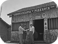
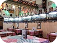

Nossa História

A história da pizzaria “Pizza Kings” é marcada por uma paixão pela culinária italiana e pelo desejo de oferecer pratos saborosos e acolhedores aos clientes. Desde a sua fundação, a pizzaria tem se destacado como um local acolhedor, ambiente agradável e com qualidade excepcional nas pizzas e massas.
A “Pizza” foi inaugurada em 1986, na pitoresca cidade de San Giuseppe, localizada no coração da região da Toscana. Seu fundador, Francesco Giuseppe Lanzi, um talentoso chef italiano, decidiu abrir estabelecimentos com o objetivo de compartilhar seu amor pela culinária tradicional italiana com o mundo.

A pizzaria rapidamente ganhou destaque na cidade, não apenas pela excelência em sua culinária, mas por adotar um ambiente cultural e familiar que a tornou única. Outras cidades logo começaram a receber novas unidades da pizzaria com o mesmo charme e sabor da primeira. Em homenagem às raízes italianas que deram origem à pizzaria e graças ao esforço de uma generosa comunidade gastronômica excepcional.
Com o passar dos anos, a “Pizza Kings” conquistou uma reputação sólida na comunidade local e além. O menu foi adaptado com clássicos da região e novas opções vegetarianas e veganas. A pizzaria também adotou ingredientes de orgânicos, e a pizzaria se tornou referência de sabor e amor ao momento da culinária italiana.
Em 1995, a família Lanzi decidiu expandir os negócios e levar seu sabor tradicional além da Itália. Hoje, a “Pizza Kings” conta com mais de 50 unidades em todo o mundo, em locais que vão desde Nova York a Tóquio. A marca continua fiel à sua herança e se tornou um símbolo de dedicação e paixão que a pizzaria se tornou um sucesso inesquecível.
A “Pizza Kings” continua a crescer e a inovar ao longo dos anos. Além de oferecer um cardápio rico em sabores, ela tem se dedicado a práticas sustentáveis, gerando maior reconhecimento de sua marca. Os clientes, por sua vez, demonstram enorme lealdade e carinho, pois reconhecem o cuidado e o afeto que são investidos em cada prato. O compromisso com a qualidade e o respeito aos ingredientes de seus valores permanecem inalterados.
Voltar